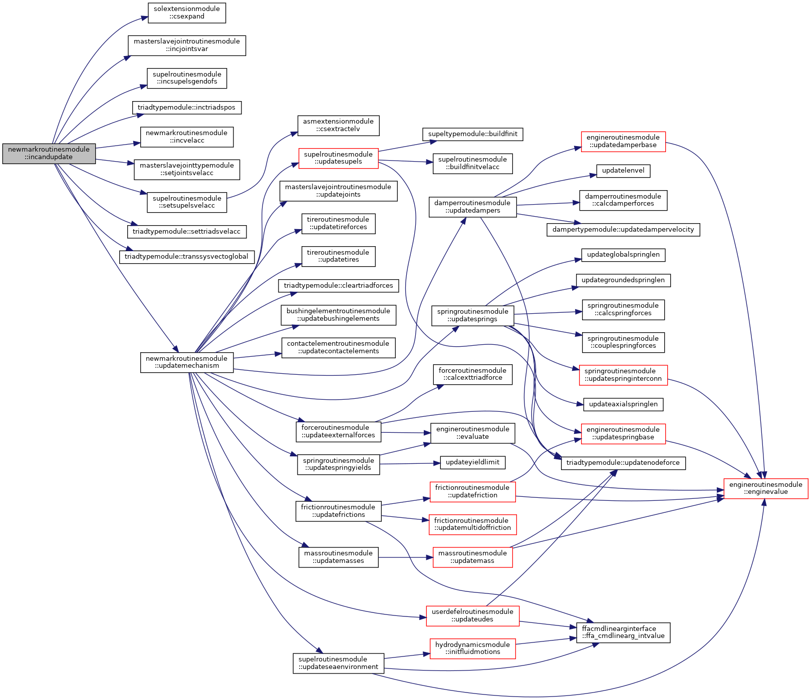
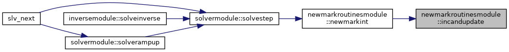
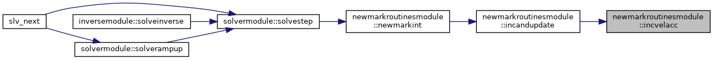
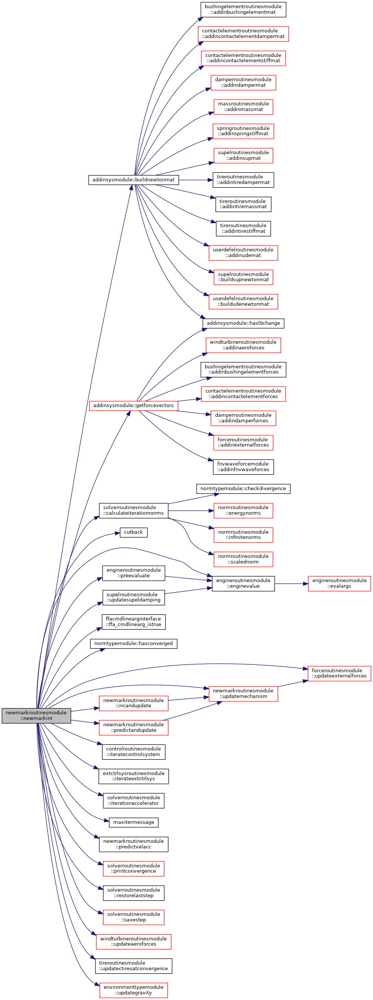
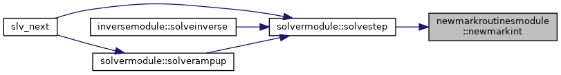
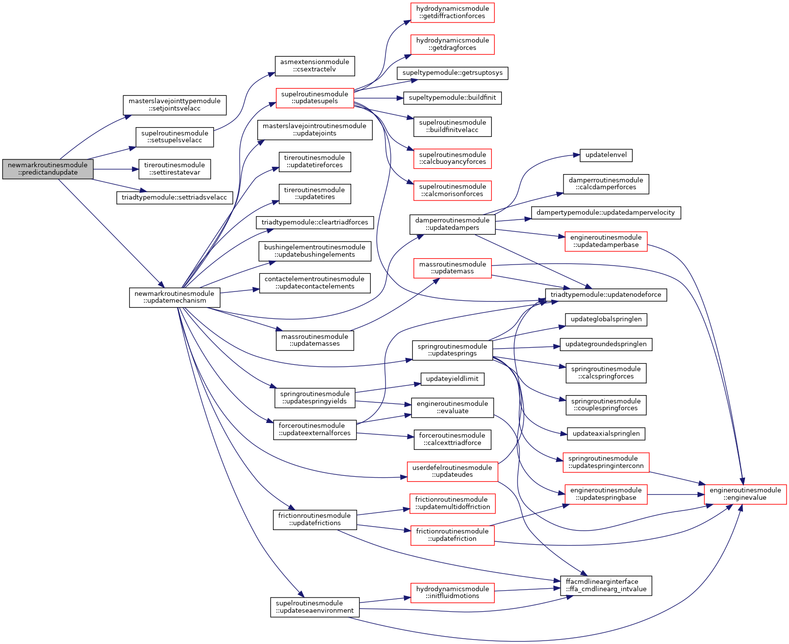
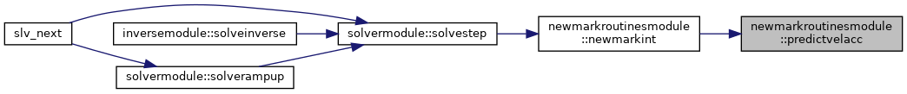
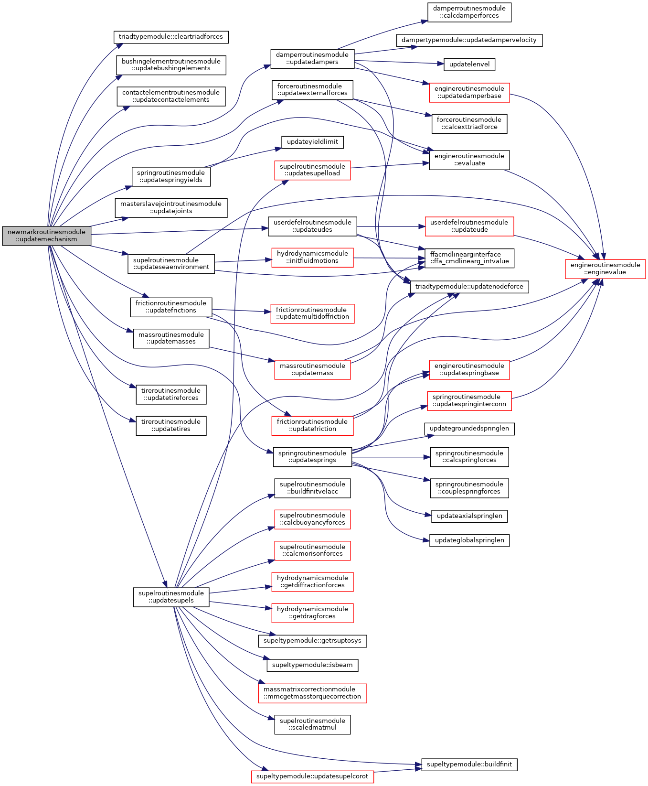
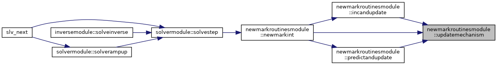

|
FEDEM Solver
R8.0
Source code of the dynamics solver
|
Module with subroutines for dynamic simulation in the time domain. More...
Functions/Subroutines | |
| subroutine | predictvelacc (sys, motions, iopAlg, ierr) |
| Starts a time step by computing predicted velocity and acceleration. More... | |
| subroutine | incvelacc (sys) |
| Increment the system velocity- and acceleration vectors. More... | |
| subroutine | updatemechanism (sys, mech, ierr, newVelocities, updateCTI) |
| Updates all mechanism objects. More... | |
| subroutine, private | predictandupdate (sam, sys, mech, iopAlg, ierr) |
| Updates mechanism based on predicted velocity and acceleration. More... | |
| subroutine | incandupdate (sam, sys, mech, delta, useTotalInc, ierr) |
| Updates mechanism based on corrected velocity and acceleration. More... | |
| subroutine | newmarkint (sam, sys, mech, ctrl, alpha, extRhs, iop, NewmarkFlag, resFileFormat, lpu, ierr) |
| Advances the dynamics solution one step forward. More... | |
Module with subroutines for dynamic simulation in the time domain.
This module contains subroutines implementing the Newmark time integration driver in the FEDEM Dynamics Solver. Both the Hilber-Hughes-Taylor (HHT-α) and the generalized-α methods are supported, and which of these algorithms to use is controlled via the third digit of the NewmarkFlag option (iopAlg):
The subroutine newmarkint() is the main driver for the time integration process. It calculates the dynamic equilibrium state of the mechanism through a Newton-Raphson iteration procedure. The time step loop itself is in the caller of this subroutine. All other subroutines in this module are utilities that are invoked by newmarkint() to carry out sub-tasks.
All equation numbers below and elsewhere in the comments in the source code are referring to the the Fedem R7.3 Theory Guide. See the Sections 7.1 to 7.4 there for the derivation.
| subroutine newmarkroutinesmodule::incandupdate | ( | type(samtype), intent(in) | sam, |
| type(systemtype), intent(inout) | sys, | ||
| type(mechanismtype), intent(inout) | mech, | ||
| real(dp), dimension(:), intent(in) | delta, | ||
| logical, intent(in) | useTotalInc, | ||
| integer, intent(out) | ierr | ||
| ) |
Updates mechanism based on corrected velocity and acceleration.
| [in] | sam | Data for managing system matrix assembly |
| [in,out] | sys | System level model data |
| [in,out] | mech | Mechanism components of the model |
| [in] | delta | Iterative solution vector correction |
| [in] | useTotalInc | If .true., use the total solution increment to update position matrices from the previous configuration |
| [out] | ierr | Error flag |
Increment all position, velocity and acceleration variables and bring all mechanism objects up-to-date with the updated configuration.


| subroutine newmarkroutinesmodule::incvelacc | ( | type(systemtype), intent(inout) | sys | ) |
Increment the system velocity- and acceleration vectors.
| [in,out] | sys | System level model data |
Also calculates tolerance variables for use in convergence check.

| subroutine newmarkroutinesmodule::newmarkint | ( | type(samtype), intent(in) | sam, |
| type(systemtype), intent(inout) | sys, | ||
| type(mechanismtype), intent(inout) | mech, | ||
| type(controltype), intent(inout) | ctrl, | ||
| real(dp), dimension(2), intent(in) | alpha, | ||
| real(dp), dimension(:), intent(in), optional | extRhs, | ||
| integer, intent(inout) | iop, | ||
| integer, intent(in) | NewmarkFlag, | ||
| integer, intent(inout) | resFileFormat, | ||
| integer, intent(in) | lpu, | ||
| integer, intent(out) | ierr | ||
| ) |
Advances the dynamics solution one step forward.
| [in] | sam | Data for managing system matrix assembly |
| [in,out] | sys | System level model data |
| [in,out] | mech | Mechanism components of the model |
| [in,out] | ctrl | Control system data |
| [in] | alpha | Global structural damping parameters |
| [in] | extRhs | Additional external forces set by external process |
| [in,out] | iop | Control variable defining what to do (see below) |
| [in] | NewmarkFlag | Time integration control variable (see below) |
| [in,out] | resFileFormat | Flag for res-file output of convergence history |
| [in] | lpu | File unit number for res-file output |
| [out] | ierr | Error flag |
This subroutine performs different sub-tasks of the solution process, depending on the value of the control variable iop, as follows:
The NewmarkFlag variable is used to select among slightly different versions of the Newmark time integrator. It is a three-digit value (cba) where each of the digits has the following interpretation:


|
private |
Updates mechanism based on predicted velocity and acceleration.
| [in] | sam | Data for managing system matrix assembly |
| [in] | sys | System level model data |
| [in,out] | mech | Mechanism components of the model |
| [in] | iopAlg | Algorithm option |
| [out] | ierr | Error flag |

| subroutine newmarkroutinesmodule::predictvelacc | ( | type(systemtype), intent(inout) | sys, |
| type(motiontype), dimension(:), intent(inout) | motions, | ||
| integer, intent(in) | iopAlg, | ||
| integer, intent(out) | ierr | ||
| ) |
Starts a time step by computing predicted velocity and acceleration.
| [in,out] | sys | System level model data |
| [in,out] | motions | All prescribed motions in the model |
| [in] | iopAlg | Algorithm option |
| [out] | ierr | Error flag |

| subroutine newmarkroutinesmodule::updatemechanism | ( | type(systemtype), intent(in) | sys, |
| type(mechanismtype), intent(inout) | mech, | ||
| integer, intent(out) | ierr, | ||
| logical, intent(in), optional | newVelocities, | ||
| integer, intent(in), optional | updateCTI | ||
| ) |
Updates all mechanism objects.
| [in] | sys | System level model data |
| [in,out] | mech | Mechanism components of the model |
| [in] | newVelocities | Indicates whether new velocities are available. If not present, Tire and friction objects are not updated. |
| [in] | updateCTI | Tire update flag |
| [out] | ierr | Error flag |

